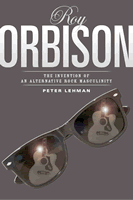

Fans called this singer/songwriter "The Voice"
Fans called this singer/songwriter "The Voice"


 Fans called this singer/songwriter "The Voice"
Fans called this singer/songwriter "The Voice"

|  |
Roy OrbisonThe Invention of an Alternative Rock MasculinityPeter Lehmanpaper EAN: 978-1-59213-037-5 (ISBN: 1-59213-037-2) |
"Peter Lehman's Roy Orbison probes the mind and psyche of American pop music's mystery man better than anything I've ever read. By exploring the depths of Roy Orbison's talents and tracking a remarkable but uncharacteristic career path, Lehman instills new passion for the man's music. Yet we are left in awe by this dark and obsessive artist whose humble beginnings belie his creative genius. To borrow a time-worn clich�, there will never be another Roy Orbison—and there may well never be another book as penetrating and revealing as this."
—Terry Lickona, Producer, Austin City Limits
Roy Orbison's music—whether heard in his own recordings or in cover versions of his songs—is a significant part of contemporary American culture despite the fact that he died almost a generation ago. Few of today's listeners know or remember how startlingly unique he seemed at the height of his career in the early 1960s. In this book, Peter Lehman looks at the long span of Orbison's career and probes into the uniqueness of his songs, singing, and performance style, arguing that singer/songwriters no less than filmmakers can be considered as auteurs.
Unlike other pop stars, Orbison was a constant presence on the Top 40, but virtually invisible in the media during his heyday. Ignoring the conventions of pop music, he wrote complex songs and sang them with a startling vocal range and power. Wearing black clothes and glasses and standing motionless on stage, he rejected the macho self confidence and strutting that characterized the male rockers of his time. He sang about a man lost in a world of loneliness and fear, one who cried in the dark or escaped into a dream world, the only place his desires could be fulfilled. This was a man who reveled in passivity, pain, and loss.
Lehman traces Orbison's development of this alternative masculinity and the use of his music in films by Wim Wenders and David Lynch. Widely admired by fellow musicians from Elvis to Jagger, Springsteen and Bono, Orbison still attracts new listeners. As a devoted fan and insightful scholar, Lehman gives us a fascinating account of "the greatest white singer on the planet," and a new approach to understanding individual singer/songwriters.
Excerpt available at www.temple.edu/tempress
"In what is essentially an extension and expansion of his Running Scared: Masculinity and the Representation of the Male Body, Lehman here dissects Orbison, his 1957-87 oeuvre, and his influence in exacting—and often excruciating—detail. Caveat: this is not a biography of Orbison per se. Instead, using the language and the tools of poststructuralism, Lehman proffers an analysis of Orbison's locus within the black/white, effeminate/macho, rock/pop dialectics that are so often (and perhaps too readily) used to define popular singers of the late Fifties and early Sixties—a locus, which Lehman fails to note, shared with the equally popular and influential Buddy Holly. "
—Bill Piekarski, Lackawanna, NY, Library Journal
"Lehman sheds new light on Orbison's elusive character...this is a skillfully written book dealing with Orbison's darker, masochistic side."
—Record Collector Magazine, 4-star (out of 5) review
"[A] bravura analysis of Roy Orbison's 'persona'...smart, provocative, eminently readable..."
—American Studies
"This book offers a fascinating study of Roy Orbison (1936-1988) as both an auteur and a valuable model for the study of popular culture artists.... Lehman generally displays virtuosic interpretative skills...[his] book offers an excellent model for writing about popular culture artists. Avoiding the pitfall of a fan's obsessive recounting of biographical and recording trivia, he conveys an admirer's enthusiasm and a humanist's interpretative skills in lively and clear prose."
—Men and Masculinities
Acknowledgments
1. There Are Many Roy Orbisons
2. Mystery Man: The Evolution of a Dark, Mysterious Persona
3. "Radical Left Turns": The Voice and the Music
4. In (and Out of) Dreams
5. "Crawling Back": The Masochist Aesthetic
6. In David Lynch's Dreams: Roy Orbison at the Movies
7. "The Finest White Pop Singer on the Planet": "Oh, Pretty Woman," 2 Live Crew, and Discourses of Race
8. Beyond the End: Roy Orbison's Posthumous Career and Legacy
Appendix: Analysis of Songs and Recordings
Notes
Works Cited
Song Acknowledgments
Index
 | Peter Lehman is Director of the Interdisciplinary Humanities Program at Arizona State University. He is the author of Running Scared: Masculinity and the Representation of the Male Body (Temple), and the editor of Masculinity Bodies/Movies/Culture. |
Music and Dance
Gender Studies
Cinema Studies
Sound Matters, edited by Michael Jarrett.
Using music as the entry point for cultural analysis, books in the series Sound Matters, edited by Michael Jarrett, seek to articulate the values, beliefs, and dreams of the societies that create it. This series invites project proposals whose interdisciplinary approaches to music and cultural analysis will result in innovative, provocative, and accessible results.
© 2015 Temple University. All Rights Reserved. This page: http://www.temple.edu/tempress/titles/1254_reg.html.